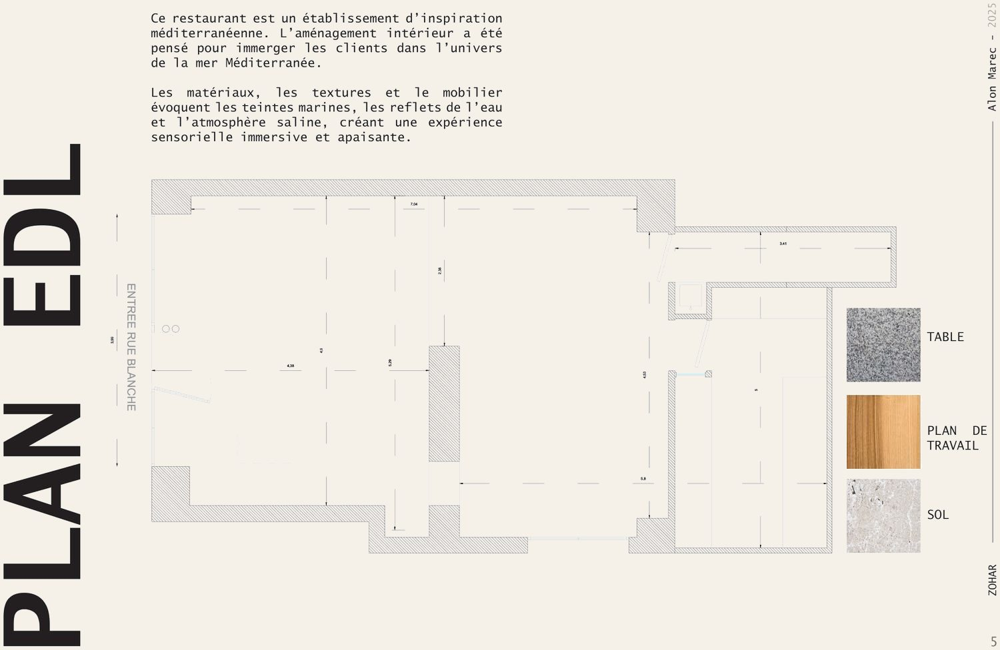
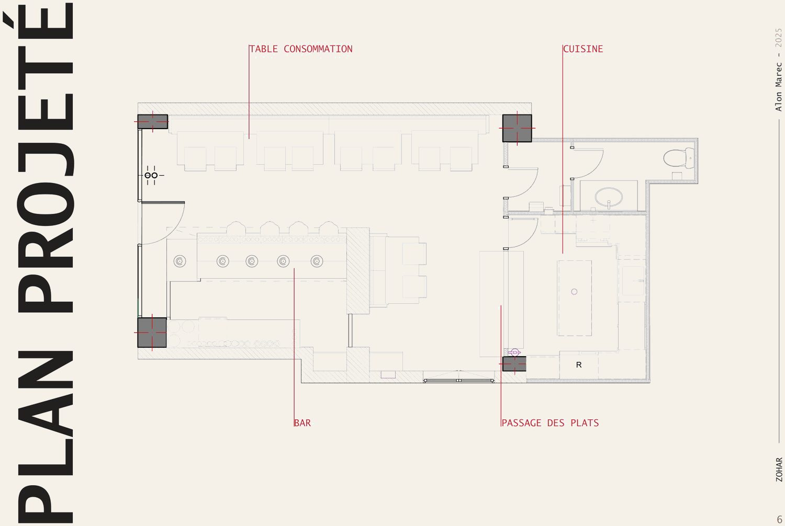
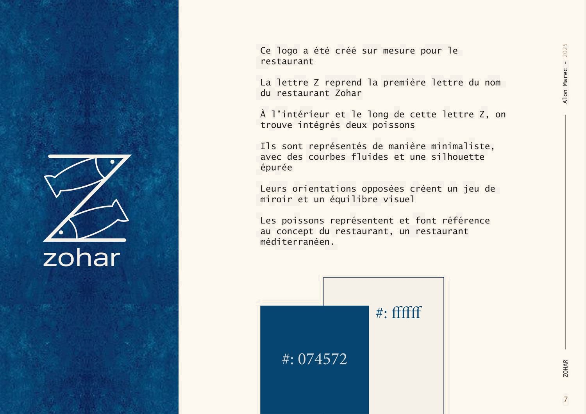
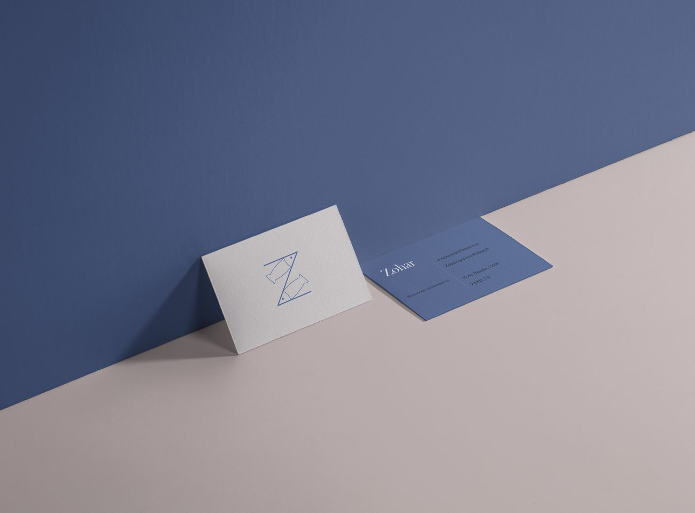

Zohar
Un restaurant méditerranéen pensé comme une immersion — plonger le client dans l'univers de la mer.

La démarche
La Méditerranée, rue Blanche
Zohar est un restaurant d'inspiration méditerranéenne au 51 rue Blanche, dans le 9ᵉ. Mon point de départ : faire ressentir la mer sans tomber dans le décor à thème. Tout passe par la matière — la pierre, le bois, les reflets de la lumière — plutôt que par l'objet.
Contexte
Un local profond et étroit, avec une seule façade sur la rue Blanche et une cuisine en fond de parcelle.
La demande
Un restaurant méditerranéen immersif, avec un bar comme pièce maîtresse et un service fluide entre cuisine et salle.
Contraintes
Établissement recevant du public : circulations, passage des plats, accessibilité et sanitaires à intégrer dans une emprise réduite.
Intention
Évoquer les teintes marines, les reflets de l'eau et l'atmosphère saline pour une expérience apaisante.
Choix d'aménagement
Un long bar central qui structure la salle, une rangée de tables le long du mur, et un passage des plats direct vers la cuisine.
Identité
Un logo dessiné sur mesure — un Z qui contient deux poissons en miroir — décliné sur la papeterie.
Transformation
Avant / Après — en plan
Du plateau existant, cloisonné et sans logique de service, au plan projeté : la salle s'organise autour du bar, et le passage des plats relie directement la cuisine aux tables.


Matériaux
Pierre, bois & bleu profond
Une palette courte et cohérente : chaque matériau a un rôle précis dans le plan.


Identité
Un logo sur mesure : la lettre Z et deux poissons en miroir.


Résultat
Le rendu 3D du bar, ouvert sur la ville.
Nature du projet Projet d'étude (ERP). Les images sont des rendus 3D et des documents d'étude, non des photographies d'un lieu construit.